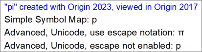

Unicode- und ANSI-Zeichen zu Textbeschriftungen hinzufügen
Access-ExtCharSet
Unicode-Zeichen zu Textbeschriftungen hinzufügen
Origin 2018 unterstützt Unicode. Es gibt mehrere Möglichkeiten, Unicode-Zeichen zu Ihren Textbeschriftungen hinzuzufügen.
- Für diejenigen, die den Hex-Code mit 4 Zeichen des gewünschten Zeichens kennen (z. B. 03BB für "λ"), beginnen Sie Ihre Textbeschriftung, geben Sie den Hex-Code ein und drücken Sie ALT+X.
- Versionen vor 2022b: Klicken Sie beim Erstellen Ihrer Textbeschriftung mit der rechten Maustaste und wählen Sie Abbildung Symbole. Wählen Sie Ihre Schriftart, aktivieren Sie das Kontrollkästchen Unicode und geben Sie den Hexcode mit vier Zeichen für das Symbol im Feld Zu Unicode gehen ein. Prüfen Sie, dass das Symbol korrekt ist, und klicken Sie auf Einfügen.
- Versionen 2022b und höher: Klicken Sie beim Erstellen Ihrer Textbeschriftung mit der rechten Maustaste und wählen Sie Einfügen: Abbildung Symbole. Dies ruft den Dialog der vereinfachten Abbildung Symbole auf, in dem gängige Zeichen nach Kategorie angeordnet sind. Klicken Sie auf die Schaltfläche Erweitert für die erweiterte Abbildung Symbole.
- Klicken Sie mit der rechten Maustaste auf die vorhandene Textbeschriftung und wählen Sie Eigenschaften. Klicken Sie auf der Registerkarte Text des Textobjekts auf die Schaltfläche Abbildung Symbole
 . Entweder wird hierdurch die erweiterte oder die einfache Abbildung Symbole geöffnet, abhängig von Ihrer Version. (Beachten Sie, dass Sie in der neuesten Version zwischen den beiden Dialogen der Symbolabbildung mit Hilfe der Schaltfläche Erweitert/Einfach unten in diesen Dialogen wechseln können.). Falls Sie den erweiterten Dialog verwenden, wählen Sie Ihre Schriftart, aktivieren Sie das Kontrollkästchen Unicode und geben Sie den Hexcode mit vier Zeichen für das Symbol im Feld Zu Unicode gehen ein. Prüfen Sie, dass das Symbol korrekt ist, und klicken Sie auf Einfügen (z. B. Schrift = Arial und Zu Unicode gehen = 03BB).
. Entweder wird hierdurch die erweiterte oder die einfache Abbildung Symbole geöffnet, abhängig von Ihrer Version. (Beachten Sie, dass Sie in der neuesten Version zwischen den beiden Dialogen der Symbolabbildung mit Hilfe der Schaltfläche Erweitert/Einfach unten in diesen Dialogen wechseln können.). Falls Sie den erweiterten Dialog verwenden, wählen Sie Ihre Schriftart, aktivieren Sie das Kontrollkästchen Unicode und geben Sie den Hexcode mit vier Zeichen für das Symbol im Feld Zu Unicode gehen ein. Prüfen Sie, dass das Symbol korrekt ist, und klicken Sie auf Einfügen (z. B. Schrift = Arial und Zu Unicode gehen = 03BB).
- Kopieren Sie während des Erstellens Ihrer Textbeschriftung ein Zeichen von einer Browserseite und fügen Sie sie in die Beschriftung ein.
 |
All diese Methoden gehen davon aus, dass der gewählte Zeichensatz das Zeichen enthält, das Sie versuchen einzufügen. Wenn der Zeichensatz das Zeichen nicht enthält, zeigt Origin es nicht an. Stattdessen sehen Sie ein leeres Rechteck () an der Stelle, die für das Zeichen reserviert ist. Sollte dies passieren, versuchen Sie den Zeichensatz zu wechseln.
|
ANSI-Zeichen zu Textbeschriftungen hinzufügen
Dies sind ältere Methoden von vor Origin 2018 und der Unterstützung von Unicode. Verwenden Sie diese Methoden, um ANSI-Zeichen zu Ihren Textbeschriftungen hinzuzufügen. Beachten Sie, dass Origin, unabhängig davon, welche Methode Sie verwenden,
Direkte Bearbeitungsmethoden verwenden wird:
- Klicken Sie auf die Stelle, an der Sie das Sonderzeichen in die Textbeschriftung einfügen möchten.
- Klicken Sie mit der rechten Maustaste und wählen Sie Abbildung Symbole.
- Legen Sie die Schrift fest, wählen Sie ggf. Ihr Symbol und klicken Sie auf Einfügen.
Alternativ können Sie die Zeichen direkt einfügen, falls Sie den ANSI-Code kennen (verfügbar in der Abbildung Symbole oder in Standardtabellen):
- Aktivieren Sie den Nummernblock auf Ihrer Tastatur.
- Geben Sie bei gedrückter ALT-Taste 0 ein, anschließend den Dezimalcode des ANSI-Zeichens über den Nummernblock Ihrer Tastatur.
- Lassen Sie die ALT-Taste los, um das Zeichen einzufügen.
Bei der Eingabe von Text im Dialog Objekteigenschaften:
- Klicken Sie mit der rechten Maustaste auf das Textobjekt und wählen Sie Eigenschaften.
- Geben Sie das Zeichen für das gewünschte Symbol ein (z. B. kleines "p" für π), markieren Sie es und klicken Sie dann auf die Schaltfläche Griechisch
 . (Beachten Sie, dass die Schaltfläche Griechisch Escape-Sequenzen einfügt).
. (Beachten Sie, dass die Schaltfläche Griechisch Escape-Sequenzen einfügt).
- Alternativ könnten Sie die Auswahlliste Schrift auf Symbol setzen und ein kleines "p" direkt als "π" eingeben.
|
Hinweis: Jede Schriftart besitzt ihren eigenen ANSI-Zeichensatz. Um die Codes für Zeichen aus einem beliebigen Zeichensatz zu finden, verwenden Sie die Windows Zeichensatztabelle (unter Alle Systemsteuerungselemente > Schriftarten in älteren Betriebssystemen oder in Ihrer Apps-Liste).
|
Daten mit Anwendern von Versionen vor 2018 teilen
Versionen älter als Origin 2018 unterstützen Unicode nicht. Daher müssen Sie auf Folgendes achten, wenn Sie eine neuere Version verwenden und beabsichtigen, Daten mit Anwendern von älterer Software zu teilen:
- Fügen Sie Zeichen nicht mit der einfachen Abbildung Symbole ein. Zeichen werden in Origin 2017 und älter nicht richtig gerendert.
- Beim Einfügen von Zeichen mittels der erweiterten Abbildung Symbole stellen Sie sicher, dass die Option Escape-Notation verwenden aktiviert ist, wenn Sie Unicode-Zeichen einfügen.
-
- 
 |
Mit Origin 2023 speichert Origin nicht mehr die OPJ-Projektdateien, die mit Origin 2017 und älteren Versionen kompatibel sind. Anwender können jedoch einzelne Fensterdateien (OGG, OGW etc.) mit 2017 und älter teilen.
|